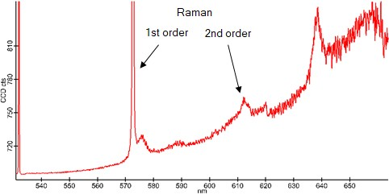

参考样品
适当的参考样品：
对于450至630 nm之间的激发波长：可使用金刚石参考样品。
对于其他波长：在平坦表面（如玻璃）上使用标记笔是可行的；黄色和红色笔效果最佳。
建议检查参考样品的荧光光谱：
选择适当的拉曼配置。使用小光栅并将
光谱仪
参数组中的单位设置为nm。记录荧光光谱。
如果可能：将激光切换至连续波操作。
将激光聚焦在参考样品上，检查是否能检测到合理的荧光光谱。
图1显示了使用Time-Bandwidth Lynx激光器记录的金刚石参考样品的荧光光谱。使用PicoQuant LDH时，拉曼线将不可见。

图1：使用Time-Bandwidth Lynx激光器记录的金刚石参考样品荧光光谱。